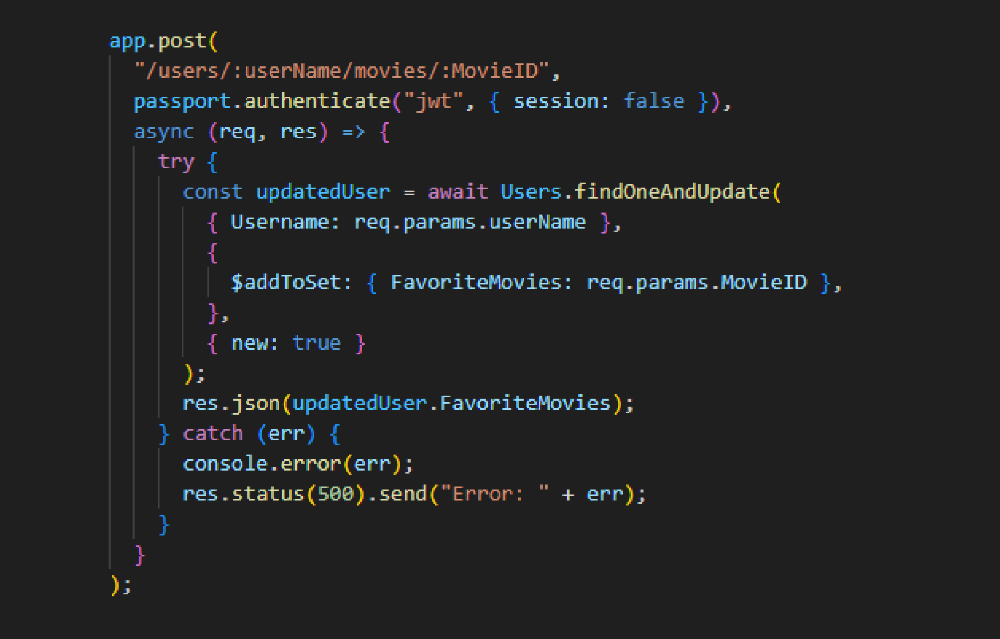
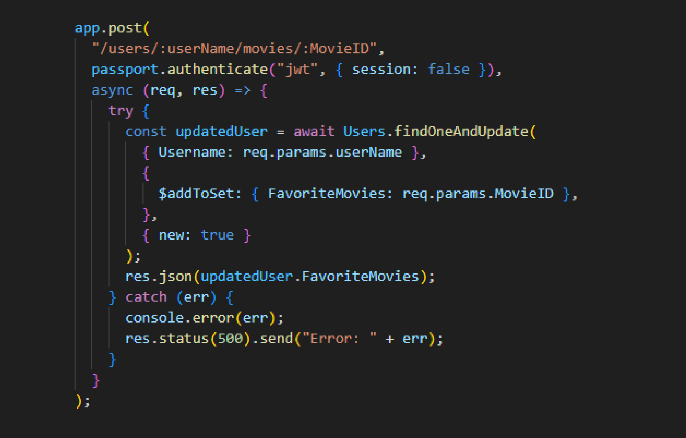

The myFlix React app serves as the client-side component for the myFlix web application, which was previously developed on the server-side using the MERN stack. This project showcases the capabilities of full-stack JavaScript development, delivering a complete web app experience.
I served as the lead developer for this project, successfully meeting all the specified requirements and developing a movie app over a span of four weeks. Throughout this experience, I gained valuable insights into the significance of well-defined endpoints and the intricacies of back-end development. Leveraging an existing REST API and MongoDB database, I seamlessly integrated these components with REACT.js. The project was entirely driven by my efforts, as I personally authored all the code, incorporating valuable feedback provided by my tutor. Moreover, I meticulously designed the user interface, ensuring a polished and comprehensive user experience.
The goal was to meticulously construct a responsive and user-friendly web application utilizing the capabilities of React, seamlessly weaving it into the fabric of the pre-existing server-side framework comprised of a REST API and MongoDB database. Within this framework, the key aims encompassed the seamless presentation of movie lists, detailed movie insights, the seamless handling of user logins and profiles, and the implementation of a sophisticated mechanism to effortlessly manage users' favorite movies.
I started off by establishing an API database, inputting crucial movie data such as Titles, descriptions, directors, genres, and images. MongoDB emerged as the ideal database choice, aligning well with the project's needs. Next, I delved into the technology selection process, considering React, Angular, and Vue.js. My analysis led me to opt for React, given its seamless compatibility and suitability for the project's objectives. With the groundwork set, I embarked on building the React application. I employed JavaScript and React components to meticulously create distinct views for login, signup, movie details, and profiles, ensuring a comprehensive user experience. To optimize user engagement, I implemented forms, harnessed Bootstrap for consistent styling, and incorporated app routing to ensure smooth navigation throughout the application. As the project drew to a close, I turned my attention to aesthetics. Drawing inspiration from the ambiance of movie theaters, I curated a color scheme featuring black and maroon hues. The final touches were refined through the adept use of CSS and Bootstrap, guaranteeing a visually appealing and seamlessly responsive experience across various devices.
I encountered a significant hurdle during the User Info Update process, where changes to user information failed to process upon submission. To overcome this issue, I engaged in meticulous debugging and conducted an exhaustive code review. Another noteworthy challenge emerged with Account Deletion, as the deletion process encountered an obstacle. Through diligent investigation, I identified and swiftly resolved the account deletion roadblock by rectifying a URL parameter case, resulting in a seamless user account removal experience. The most formidable obstacle I faced was with Favorites Management. Saving a movie proved to be a repetitive task, often requiring multiple attempts. Additionally, removing a movie from Favorites became impossible after a failed initial attempt. In response, I devised an innovative solution by introducing a new backend endpoint specifically designed for movie deletion. This strategic move optimized data handling by modifying the GET favoriteMovies endpoint to exclusively retrieve movie IDs. This optimization streamlined data management, significantly enhancing overall performance.
Should I embark on a similar app-building journey in the future, I will prioritize the meticulous creation of endpoints, ensuring a better grasp from the outset. My experience has revealed that endpoint functionality posed the greatest challenge, impeding smooth operations as intended. This unforeseen hurdle necessitated my involvement in backend adjustments, diverting my focus from the frontend where it was intended. However, the core facets that underpinned my design vision and functionality proved immensely successful, aligning seamlessly with my initial vision. This aspect remains unchanged and mirrors my original intent, signifying a gratifying achievement. The invaluable lesson I gleaned from this endeavor is the profound significance of mastering endpoints. This understanding was not without its challenges, yet I am profoundly appreciative of the opportunity to deepen my proficiency with React. This undertaking broadened my skills and deepened my comprehension of endpoint intricacies, undoubtedly enhancing my future development endeavors.

 

 GitHub Link
GitHub Link